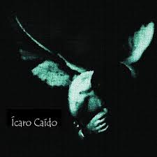

Obra: Ícaro Caído
Tipo: Disco
Grabación: Verano de 2008
Autor: Manuel M. Frutos
Producción: Alejandro de Pinedo
Ícaro Caído
Ícaro Caído fue grabado en el verano de 2008 y autopublicado en colaboración con el productor Alejandro de Pinedo.
El disco reúne nueve temas que compuse siendo muy joven, nacidos inicialmente desde la guitarra, desde esa forma directa y casi íntima de buscar una canción antes de que exista del todo.
En la grabación, esas canciones crecieron hacia una armonización pop más variada, con arreglos y colores que ampliaron su primera raíz acústica. Es una obra temprana, pero también un punto importante en mi manera de entender la composición: partir de algo sencillo y dejar que encuentre su propio paisaje.
Ni mirarte
Entrevista
Canciones de Ícaro Caído
Selecciona una canción para escucharla.
Los audios se cargarán desde la carpeta mp3.